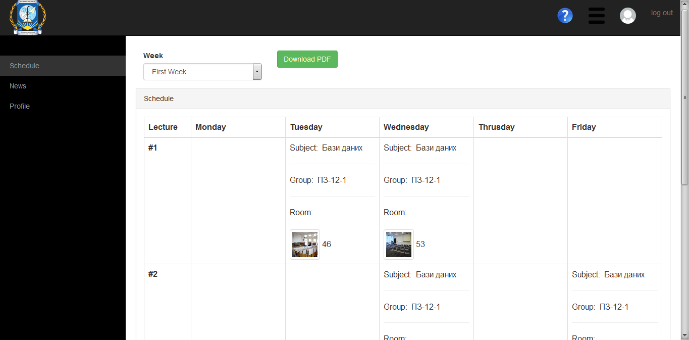

Сторінка перегляду розкладу
На цій сторінці можна переглянути розклад за чисельник і знаменник, а також завантажити його у форматі PDF.

Щоб переглянути розклад за чисельник чи знаменник оберіть необхідне значення у випадаючому списку Week.
Щоб завантажити розклад у форматі PDF натисніть зелену кнопку Download PDF.
Пункти News та Profile мають той самий функціонал що й в користувача з правами «Адміністратор”
Created with the Personal Edition of HelpNDoc: Easily create EPub books